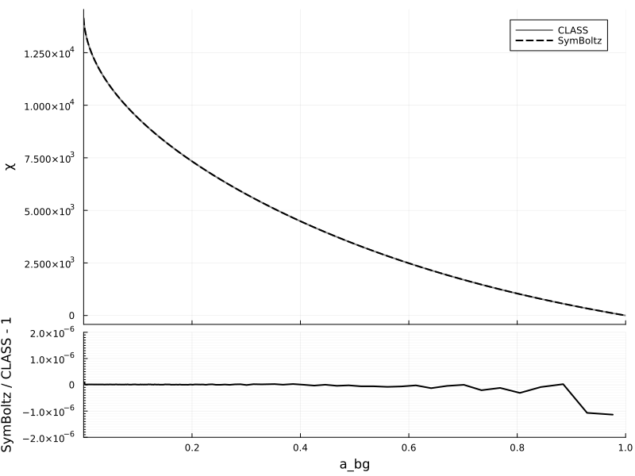
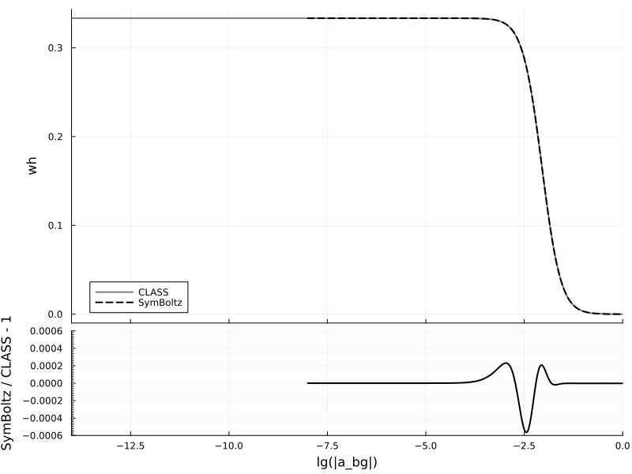
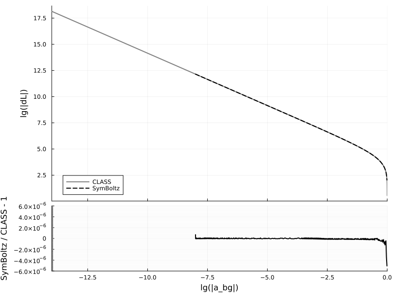
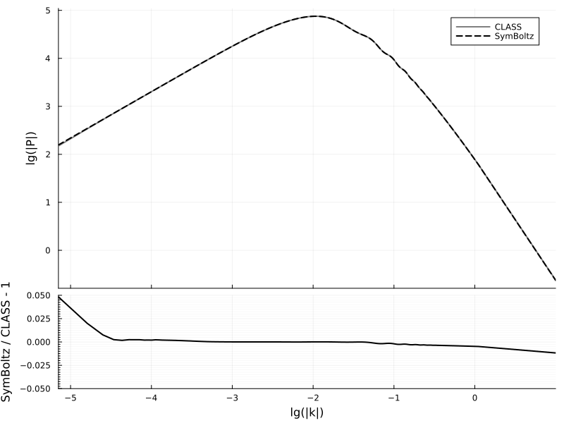
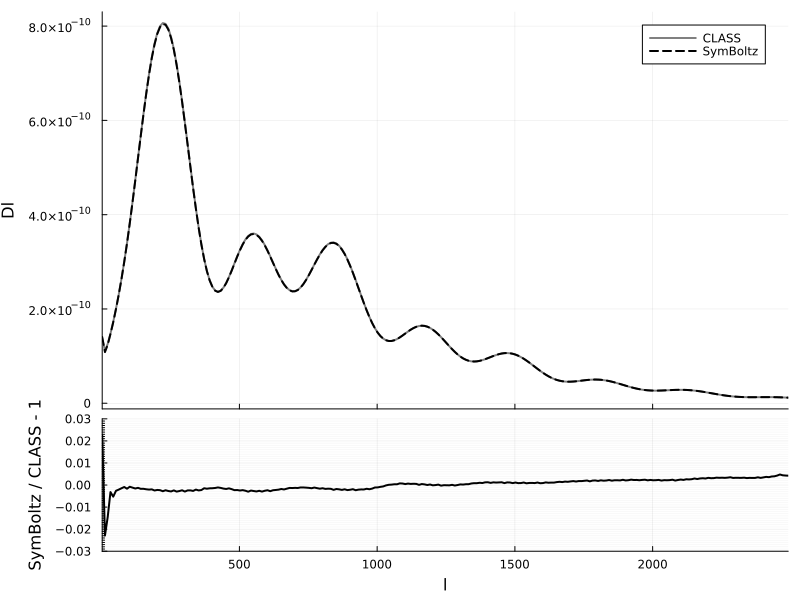

Comparison to CLASS
This comparison script automatically builds the latest version of the fantastic Einstein-Boltzmann solver CLASS and compares its results to the latest version of SymBoltz:
using SymBoltz
lmax = 6
M = SymBoltz.ΛCDM(; lmax, K = nothing)
pars = SymBoltz.parameters_Planck18(M)
prob = CosmologyProblem(M, pars)Cosmology problem for model ΛCDM
Stages:
Background: 1 unknowns, 0 splines
Thermodynamics: 5 unknowns, 0 splines
Perturbations: 61 unknowns, 5 splines
Parameters:
c₊Ω₀ = 0.26447041034523616
b₊Ω₀ = 0.04936780993111075
γ₊T₀ = 2.7255
I₊ns = 0.965
h = 0.6736
h₊m = 1.0695971529767385e-37
I₊As = 2.099e-9
b₊rec₊Yp = 0.2454
ν₊Neff = 2.99Background
Conformal time

Hubble function
Energy densities

Equations of state

Luminosity distance

Thermodynamics
Optical depth derivative
Optical depth exponential
Visibility function
Free electron fraction
Baryon temperature
Baryon equation of state
Baryon sound speed
Perturbations
Metric potentials

Energy overdensities

Momenta

Shear stresses

Polarization

Power spectra
Matter power spectrum

CMB angular power spectrum
